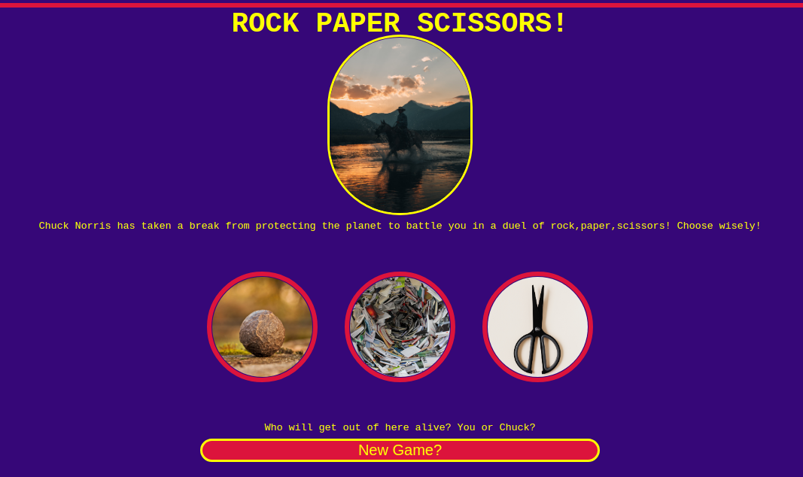
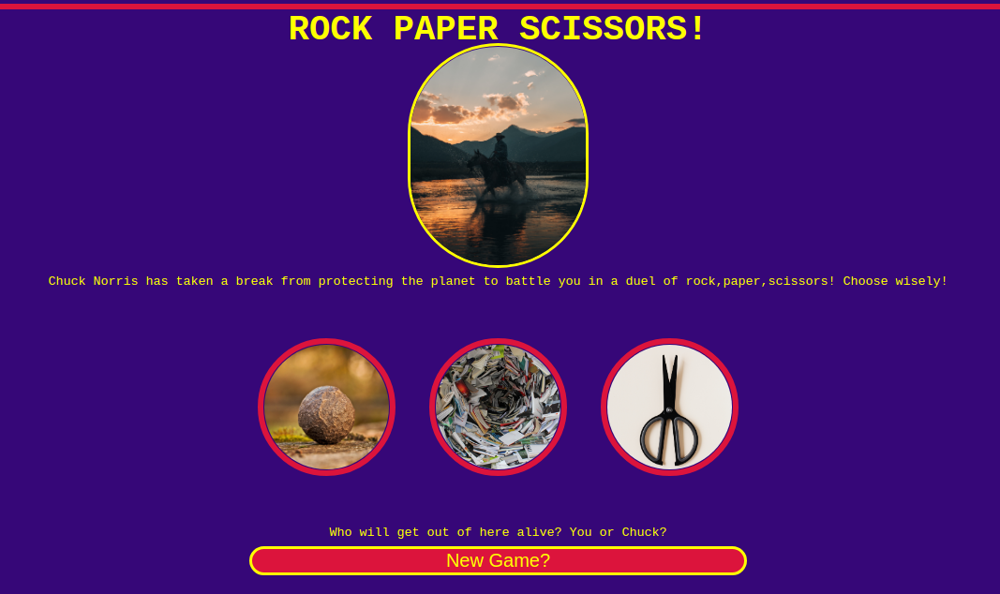

Coding the Rock Paper Scissors Site
 

Intro
This project was my introduction to JS through the Odin Project Foundations course. Initially, this project took a longer day of playing with loops that wouldn't work. From there, I visited other student solutions to make my own...It was rough, plus it only ran in the console!
After a little break and learning more about JS, I came back with renewed motivation. Even though this was already a decent challenge, I wanted to let users pick an image rather than having to type in their choice. I also wanted to make the JS completely from scratch using my own problem solving skills (which is why the code may appear a bit large, but hey I am new to this!). To make things really interesting, I also wanted flex some API skills and make things Chuck Norris themed. There is a random Chuck Norris joke every time the page reloads and the API also gives the categories the jokes may fall under.
GitHub Code
Here is a link to the code for this project
(Just click on the GitHub logo)

Go Live!
Check out the site here!I have also loaded a site preview below: